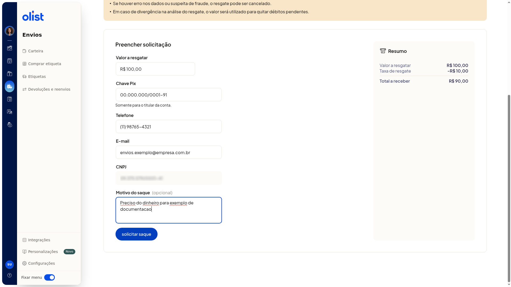

Olist Envios no ERP
Importante
- Se Envios não aparecer na barra lateral de produtos, peça acesso ao administrador da conta.
- Para comprar etiquetas, é preciso ter saldo na carteira.
- Na recarga manual, o valor mínimo é de R$ 50,00.
- A recarga automática usa cartão de crédito, já salvo ou cadastrado na hora.
- No resgate, a tela informa taxa de R$ 10,00, limite de R$ 5.000,00 por solicitação e resgate apenas para a mesma titularidade da conta.
- O CNPJ da solicitação de resgate aparece preenchido e não pode ser alterado.
Instruções
Adicionar créditos pela página Envios
-
Acesse barra lateral de produtos > Envios.
-
Confira o aviso de Envios ativado e o bloco Créditos disponíveis. O valor aparece mascarado.

-
Clique em adicionar créditos.
-
Escolha Recarga manual. A opção indica Pix ou cartão, com mínimo de R$ 50,00.

-
No campo R$, digite o valor em reais.
-
Escolha PIX ou um cartão já salvo. Se não houver cartão utilizável, clique em adicionar cartão.
-
Clique em continuar para seguir ao pagamento, com o valor e a forma já escolhidos.
Programar a recarga automática
- Abra Adicionar créditos pelo botão adicionar créditos da página Envios ou por Carteira > adicionar créditos.
- Escolha Recarga automática. A opção indica recarga com cartão quando o saldo atinge o mínimo configurado.
- Preencha Quando o saldo estiver abaixo de com o valor em reais. A recarga ocorre quando o saldo chega a esse valor.
- Preencha Recarregar o valor de com o valor em reais de cada recarga.
- Selecione um cartão salvo ou clique em adicionar cartão.
- Clique em continuar para seguir com os dois valores e o cartão selecionados.
Cadastrar um cartão
- Em Recarga manual ou Recarga automática, clique em adicionar cartão.
- No painel Cadastrar cartão, preencha os campos obrigatórios:
- Número do cartão
- Nome do titular
- Data de vencimento: mês e ano
- Código de segurança
- Documento do titular
- CEP do titular
- Se quiser, preencha Apelido. O campo é opcional.
- Clique em adicionar cartão para concluir o cadastro. Para sair sem salvar, clique em voltar, fechar painel ou cancelar. Cancelar devolve à recarga sem salvar o cartão.
Adicionar créditos pela Carteira
-
Na página Envios do ERP da Olist, clique em ir para plataforma Envios.
-
Se aparecer a tela de boas-vindas, clique em começar. A Carteira exibe adicionar créditos, resgatar créditos e a tabela de movimentações.

-
Se preferir, abra o mesmo destino em menu lateral esquerdo > Carteira.
-
Clique em adicionar créditos.
-
Escolha Recarga manual ou Recarga automática. As opções são as mesmas da entrada pelo ERP.
Consultar o passo a passo no Guia de Envios
-
Na página Envios, em Guia de Envios, abra o card Adicione créditos à sua carteira.
-
Leia o painel: é preciso ter saldo para comprar etiquetas.

-
Siga o roteiro exibido: acesse o painel do Envios da Olist, clique em Carteira no menu lateral esquerdo, clique em Adicionar créditos, insira o valor e siga as instruções da tela para concluir o pagamento.
-
Assista ao vídeo Como adicionar créditos a sua carteira em Envios da Olist ou acesse o link Central de Ajuda. Não há campos para preencher. Com saldo, as etiquetas podem ser compradas automaticamente após cada expedição no ERP.
Resgatar créditos
-
Na Carteira do painel Envios, clique em resgatar créditos.
-
Na tela Solicitar resgate, leia as regras de taxa, limite e titularidade.
-
Informe Valor a resgatar em reais. O resumo da solicitação é atualizado com o valor informado.
-
Confira Chave Pix, Telefone e E-mail. Eles podem já vir preenchidos com os dados da conta e podem ser editados.
-
Confira o CNPJ preenchido. Não há campo para substituir esse valor.
-
Se quiser, preencha Motivo do saque (opcional).

-
Clique em solicitar saque para enviar a solicitação já preenchida.
Resultado
Com saldo na carteira, as etiquetas podem ser compradas automaticamente depois de cada expedição no ERP.
Informações adicionais
- O card Adicione créditos à sua carteira não é um formulário: ele mostra o roteiro, o vídeo e o link Central de Ajuda.
- adicionar créditos, na página Envios ou na Carteira, abre as mesmas opções: Recarga manual e Recarga automática.